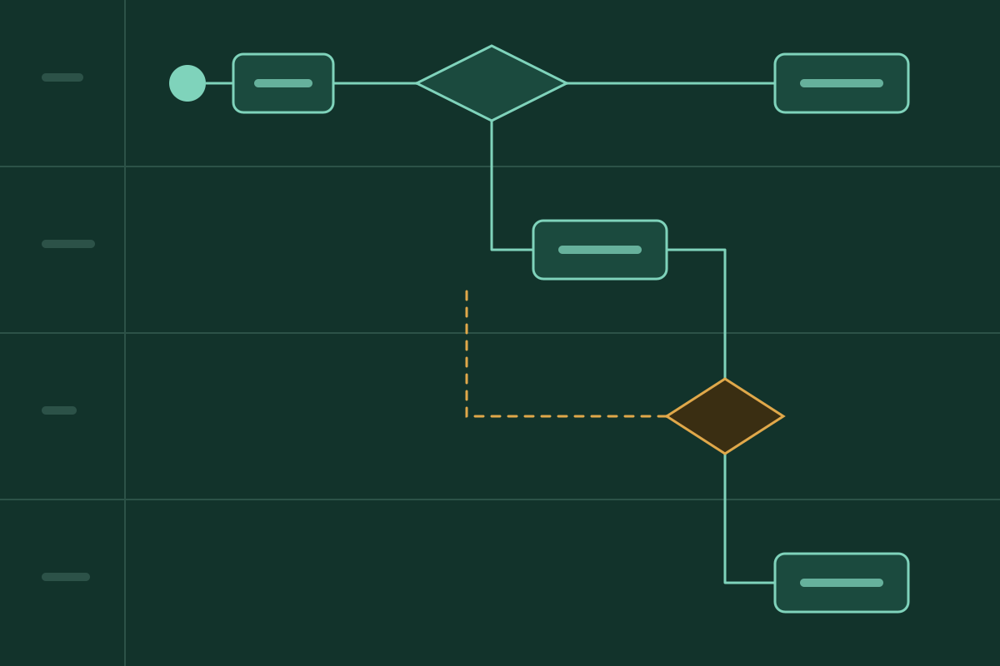

Business analysis, health tech
Business analysis for digital health solutions
Two digital health projects taken from problem to delivery-ready plan: a Remote Patient Monitoring system to reduce hospital readmissions, and an eMAR platform to replace paper-based medication records.

Business problem
Remote Patient Monitoring
A 15-clinic healthcare provider had a 30-day readmission rate of 18%.
eMAR medication management
Medication records were kept on paper, and orders between GPs and the pharmacy were placed by phone and fax. Manual steps like these leave room for medication errors and make compliance evidence slow to retrieve.
Objective
- Cut 30-day readmissions from 18% to 14.4%, a 20% reduction.
- Replace paper-based medication records with an integrated digital platform that reduces errors and improves compliance.
- Give delivery teams clear requirements and a prioritized backlog they can build from.
Approach
Both projects followed the same path, from finding the problem to defining the fix.
- Identified and analyzed stakeholders, then set out responsibilities and communication in RACI matrices and communication plans.
- Ran gap and root cause analysis on how care is delivered today.
- Mapped As-Is and To-Be processes to redesign manual workflows.
- Built the business case for the recommended solution.
- Documented requirements in Business Requirements Documents, with user stories and acceptance criteria.
- Translated the requirements into a prioritized Jira backlog of epics and user stories, planned across Agile sprints.
Analysis
The analysis worked on two fronts: the process and the numbers.
- Process: As-Is maps exposed the manual steps behind costly outcomes, and To-Be maps showed how the redesigned workflow would run.
- Financial: the Remote Patient Monitoring business case tested the investment on net present value, return on investment and payback period.
- Data: project data was cleaned and analyzed with SQL, Power Query and Excel, and tracked against KPIs in interactive Power BI dashboards.
Findings
The Remote Patient Monitoring business case showed the investment pays for itself.
- $12.6M
- projected net present value
- 60%
- projected return on investment
- 1.4 years
- projected payback period
For medication management, the gaps sat in the manual handoffs: paper records, phone and fax ordering, and compliance evidence that had to be gathered by hand.
Recommendations
Remote Patient Monitoring
Adopt a Remote Patient Monitoring solution, introduced through a phased pilot-to-roll-out plan to control risk and cost.
eMAR medication management
- An integrated eMAR system to replace paper-based medication processes.
- Barcode verification and real-time allergy alerts to reduce medication errors.
- Automated GP-to-pharmacy integration in place of phone and fax ordering.
- A digital audit trail for compliance evidence.
Outcome
Each project ended with a package a delivery team can act on:
- A business case with the financial projections and a phased roll-out plan.
- Business Requirements Documents with user stories and acceptance criteria.
- A prioritized Jira backlog of epics and user stories, planned across Agile sprints.
- Interactive Power BI dashboards to track KPIs.
Business impact
These are projected benefits from the business case and solution design, not measured results.
- 18% to 14.4%
- target for 30-day readmissions
- $12.6M
- projected NPV, with payback in about 1.4 years
- Minutes
- to retrieve compliance evidence with the digital audit trail
Next case study